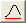

Weitere relevante Videos: Datenbereich über Fitter auswählen
Weitere relevante Videos: Datenbereich über Fitter auswählen
 Weitere relevante Videos: Datenbereich über Fitter auswählen
Weitere relevante Videos: Datenbereich über Fitter auswählen
Der Dialog Peak-Fit Parameter kann geöffnet werden, indem auf die Schaltfläche Fit-Steuerung auf der Seite Peaks anpassen des Hilfsmittels Peaks analysieren geklickt wird.
Es zeigt zwei Bereiche: den oberen und den unteren Bereich. Zusätzlich gibt es einige Schaltflächen und eine Auswahlliste in der Mitte. Dieser Dialog ermöglicht es Ihnen, die Anpassung der Peaks zu steuern und zu überwachen.
Die Registerkarte Parameter listet alle Parameter sämtlicher für das Durchführen der Anpassung ausgewählten Funktionen auf. Die Spalten, die auf der Registerkarte gezeigt werden, können benutzerdefiniert angepasst werden. Standardmäßig werden Kontrollkästchen angezeigt, die steuern, ob ein Parameterwert während des iterativen Anpassungsprozesses variieren oder fest sein soll. Sie können diese Registerkarte auch verwenden, um festzulegen, welche Parameter geteilt werden sollen. Sie können das Anpassungsverfahren überwachen, wenn diese Registerkarte aktiv ist. Außerdem können Sie die Spalten hinzufügen/entfernen, indem Sie auf einen Spaltentitel klicken und die Spaltennamen im Kontextmenü aktivieren/deaktivieren. Weitere Einzelheiten können unter Benutzerdefiniertes Anpassen der Registerkarten im oberen Bereich unten nachgelesen werden.
| Hinweis: Wenn Sie eine Iteration zurückgehen möchten, um die Parameter zu überprüfen, können Sie auf die Schaltfläche Zurück klicken |
Diese Registerkarte wird verwendet, um untere und obere Schranken für Parameter festzulegen. Für jeden Parameter können Sie Werte in die Spalten Untere Grenzen und Obere Grenzen eingeben und eine Bedingung aus den Spalten < oder <= auswählen, um die untere und obere Schranke zu definieren. (Beachten Sie, dass die Bedingungen "<", "<=" abwechselnd auftreten. Sie können zwischen ihnen durch doppeltes Klicken auf die Spalten < oder <= wechseln.)
Die Spalten, die auf der Registerkarte gezeigt werden, können benutzerdefiniert angepasst werden. Außerdem können Sie die Spalten hinzufügen/entfernen, indem Sie mit der rechten Maustaste auf einen Spaltentitel klicken und die Spaltennamen im Kontextmenü aktivieren/deaktivieren. Weitere Einzelheiten können unter Benutzerdefiniertes Anpassen der Registerkarten im oberen Bereich unten nachgelesen werden.
| Max. Anzahl der Iterationen | Bestimmt die maximale Anzahl der ausgeführten Iterationen, wenn auf die Schaltfläche Fit geklickt wird. |
|---|---|
| Toleranz | Legt die Toleranz in dieser Auswahlliste fest. Die Anpassung wird als erfolgreich betrachtet, wenn der reduzierte Chi^2-Wert zwischen zwei aufeinander folgenden Iterationen kleiner als der Toleranzwert ist. |
| Ungültige Behandlung der gewichteten Daten |
|
| Benutzerdefinierte Gewichtung |
Legen Sie den Wert der benutzerdefinierten Gewichtung fest. Diese Option ist verfügbar, wenn Mit benutzerdefiniertem Wert ersetzen aktiviert ist. |
| Aktivieren von Bedingungen | Legt fest, ob die Nebenbedingungen während der Peakanpassung aktiviert sind. Beachten Sie, dass diese Einstellung und Nebenbedingungen (siehe nächsten Abschnitt) NICHT mit anderen Anpassungsparametern gespeichert werden, ES SEI DENN der Anwender aktiviert Status Lineare Nebenbedingungen aktivieren und Nebenbedingungen im Dialog Designeinstellung für Peaks analysieren. (Seit Origin 2021 sind diese beiden Optionen per Standard aktiviert.) |
| Nebenbedingungen | Legen Sie die linearen Nebenbedingungen für die Fit-Parameter fest. Die Syntax zum Festlegen von Nebenbedingungen ist die gleiche wie zum Anpassen der Wiederholungen im Dialog NLFit. Um auf die Parameter im n-ten Peak zu verweisen, sollte die Schreibweise "ParaName__n" (zwei Unterstriche) verwendet werden. Bitte lesen Sie Einzelheiten unter diesem Thema nach. |
Wenn Sie mit der rechten Maustaste auf einen Spaltentitel klicken, können Sie ein Kontextmenü sehen, das alle Elemente oder Spalten auflistet, die auf der aktuellen Registerkarte gezeigt werden. Jeder Spaltennamen, der mit einem Häkchen markiert ist, ist eine der gezeigten Spalten. Um eine Spalte hinzuzufügen/zu entfernen, können Sie seinen Namen im Kontextmenü auswählen und den Anzeigestatus ändern. Um alle Elemente auf der Registerkarte anzuzeigen, können Sie die Option Alle Spalten anzeigen im Ausklappmenü aktivieren.
Die folgende Tabelle führt alle Spalten auf, die auf den Registerkarten des oberen Bereichs angezeigt werden können:
| Spalte | Bedeutung | Standardmäßig auf der Registerkarte Parameter angezeigt? | Standardmäßig auf der Registerkarte Schranken anzeigt? |
|---|---|---|---|
| Anz. | Der Index des Peaks | Ja | Ja |
| Peaktyp | Die für den Peak ausgewählte Funktion Wenn Sie auf diese Spalte klicken, wird eine Auswahlliste angezeigt, mit der Sie die Funktion ändern können. | Ja | Ja |
| Param | Der Parametername | Ja | Ja |
| Bedeutung | Die Bedeutung des Parameters | Ja | Ja |
| Teilen | Festlegen, ob der Parameter geteilt werden kann. Wenn ein Parameter nicht geteilt werden soll, geben Sie in dieser Spalte 0 ein. Ansonsten weisen Sie einen Wert als Gruppenzahl zu, der nicht Null ist. Alle Parameter mit der gleichen Gruppenzahl teilen den gleichen Wert während des Anpassungsverfahrens. | Ja | Nein |
| Fest | Diese Option bestimmt, ob der Parameter fest sein soll. Wenn ein Parameter fest ist, bleibt der Wert während des Anpassungsverfahrens unverändert. | Ja | Nein |
| Wert | Wert des Parameters Sie können doppelt auf diese Spalte klicken und den Parameterwert dann bearbeiten. | Ja | Ja |
| Fehler | Parameterfehler | Ja | Nein |
| Abhängigkeit | Abhängigkeitswert | Ja | Nein |
| Untere Konf Grenzen | Untere Konfidenzgrenze | Ja | Nein |
| Höhere Konf Grenzen | Obere Konfidenzgrenze | Ja | Nein |
| Signifikante Stellen | Diese Option legt die signifikanten Stellen der Zahlen in der Spalte Wert fest. Die Standardoption ist System, das heißt, den gültigen Stellen sind keine Grenzen gesetzt. Sie können die signifikanten Stellen aus der Auswahlliste auswählen. Verfügbarer Optionsbereich von 1 bis 15 | Ja | Nein |
| Untere Grenzen | Der untere Schrankenwert | Nein | Ja |
| < oder <= | Das Bedienelement der unteren/oberen Grenze | Nein | Ja |
| Obere Grenzen | Der obere Schrankenwert | Nein | Ja |
| Datenbereich | Der anzupassende Datenbereich | Nein | Nein |
| Alle Spalten zeigen | Legt fest, ob alle Spalten gezeigt werden. |
Durch Klicken auf einen Registerkartentitel mit der rechten Maustaste wird ein Kontextmenü geöffnet (siehe folgenden Screenshot). Mit dem Menü können Sie die Registerkarten benutzerdefiniert anpassen, z.B. die aktuelle Registerkarte umbenennen oder eine neue Registerkarte hinzufügen.
Die Bedeutungen der Menübefehle sind folgende:
| Standardkonfiguration laden |
Mit dieser Option können Sie die Standardkonfiguration für die Registerkarten Parameter und Schranken laden. Es zeigt zwei Untermenüs:
|
|---|---|
| Konfiguration laden | Mit diesem Menübefehl können Sie eine gespeicherte Konfiguration für die aktuelle Registerkarte laden. |
| Konfiguration speichern | Die aktuelle Bedingung wird gespeichert. |
| Konfiguration speichern als... | Die aktuelle Einstellung wird als eine andere Konfiguration gespeichert. |
| Neue Registerkarte | Eine neue Registerkarte wird erstellt. |
| Registerkarte löschen | Die aktuelle Registerkarte wird gelöscht. |
| Registerkarte umbenennen | Die aktuelle Registerkarte wird umbenannt. |
Sie können ein Kontextmenü, wie im folgenden Screenshot zu sehen, aufrufen, indem Sie mit der rechten Maustaste auf die Zeilen in der Spalte Teilen klicken.
Die Bedeutungen der Menübefehle sind folgende:
| Gleichen Status "Teilen" auf alle anwenden... | Legt den gleichen Status Teilen für die Parameter fest, die den gleichen Präfixnamen haben ("xc_1" und "xc_2" haben zum Beispiel den gleichen Präfixnamen "xc"). |
|---|---|
| Status "Teilen" löschen | Löscht den Status Teilen für alle Parameter. |
Sie können ein Kontextmenü, wie im folgenden Screenshot zu sehen, aufrufen, indem Sie mit der rechten Maustaste auf die Zeilen in der Spalte Fest klicken.
Die Bedeutungen der Menübefehle sind folgende:
| Status "Fest" auf alle anwenden... | Legt den gleichen Status Fest für die Parameter fest, die den gleichen Präfixnamen haben ("xc_1" und "xc_2" haben zum Beispiel den gleichen Präfixnamen "xc"). |
|---|---|
| Status "Fest" löschen | Löscht den Status Fest für alle Parameter. |
Sie können ein Kontextmenü, wie im folgenden Screenshot zu sehen, aufrufen, indem Sie mit der rechten Maustaste auf die Zeilen in der Spalte Wert klicken.
Die Bedeutungen der Menübefehle sind folgende:
| Gleichen "Wert" auf alle anwenden... | Legt den gleichen Wert für die Parameter fest, die den gleichen Präfixnamen haben ("xc_1" und "xc_2" haben zum Beispiel den gleichen Präfixnamen "xc"). |
|---|---|
| "Wert" von allen kopieren... | Kopiert die Werte von Wert von allen Parametern, die den gleichen Präfixnamen haben. |
| "Wert" in alle einfügen... | Fügt einen Datensatz in den Wert von allen Parametern ein, die den gleichen Präfixnamen haben. |
| Ganze Spalte kopieren | Kopiert die ganze Spalte Wert. |
| Ganze Spalte einfügen | Fügt einen Datensatz in die Spalte Wert ein. |
Durch Rechtsklick auf die Zeilen in den Spalten < or <= können Sie das folgende Kontextmenü öffnen, um den "Status der Schranken" zu teilen:
Wenn Sie Schranken für einen Parameter festgelegt haben, können Sie ebenfalls ein Kontextmenü öffnen, indem Sie mit der rechten Maustaste auf die Zeilen in den Spalten Untere Grenzen und Obere Grenzen klicken, um ein ähnliches Kontextmenü, wie im folgenden Screenshot gezeigt, zu erhalten.
Die Bedeutungen der Menübefehle sind folgende:
| Zellen formatieren | Legt das Format der ausgewählten Zelle fest. Aktuell sind nur drei Formate verfügbar, Numerisch, Datum, Zeit. |
|---|---|
| Gleiche "Grenzen" auf alle anwenden... | Legt den gleichen Status der Grenzen für die Parameter fest, die den gleichen Präfixnamen haben ("xc_1" und "xc_2" haben zum Beispiel den gleichen Präfixnamen "xc"). |
| Format auf alle anwenden | Das Fomat der aktuellen Zelle wird auf alle Parameter angewendet, die den gleichen Präfixnamen aufweisen (zum Beispiel haben "xc_1" und "xc_2" den gleichen Präfixnameen von "xc"). |
| Grenzen für alle löschen... | Löscht den Status der Grenzen für die Parameter, die den gleichen Präfixnamen haben. |
| Grenzen auf Standard zurücksetzen | Setzt den Status der Grenzen auf die Standardwerte zurück. |
| "Untere Grenzen/Obere Grenzen" von allen ... kopieren | Auf dieses Menüelement kann nur durch Rechtsklick auf die Spalte Obere Grenzen zugegriffen werden. Es kopiert den Wert der oberen Grenze von allen Parametern, die den gleichen Präfixnamen haben. |
| "Untere Grenzen/Obere Grenzen" in alle ... einfügen | Auf dieses Menüelement kann nur durch Rechtsklick auf die Spalte Obere Grenzen zugegriffen werden. Es fügt einen Datensatz in den Wert der "Oberen Grenzen" von allen Parametern ein, die den gleichen Präfixnamen haben. |
| Ganze Spalte kopieren | Kopiert sämtliche Werte der Spalten Untere Grenzen/Obere Grenzen. |
| Ganze Spalte einfügen | Fügt einen Datensatz in die Spalten Untere Grenzen/Obere Grenzen ein. |
| Autom. Parameterinitialisierung | Legt fest, ob die automatische Parameterinitialisierung aktiviert wird. Wenn Sie die in einem Design gespeicherten Parameterwerte verwenden möchten, indem Sie das Design anwenden, deaktivieren Sie dieses Kontrollkästchen. |
|---|---|
| Verbergen |
Klicken Sie auf diese Schaltfläche, um den Dialog Parameter verbergen zu öffnen, mit dem Sie zu verbergende Parameter im Dialog Peak-Fit Parameter auswählen können. Es bietet die zwei Methoden Parameter mit folgenden Präfixen verbergen und Parameter verbergen außer die Gemeinsamen in, um Parameter zu verbergen. Wenn beide Methoden ausgewählt sind, hat erstere Methode Priorität vor der zweiten.
|
Dieser Bereich wird verwendet, um Anpassungsverfahren und Ergebnisse zu überwachen. Sie können zum Beispiel sehen, ob der Fit konvergiert hat oder nicht, wie viele Iterationen durchgeführt wurden und was der aktuelle Chi-Quadrat-Wert ist.
| Die Auswahlliste Funktion | Wählen Sie eine Funktion aus dieser Liste. Dann wird der Peaktyp für alle Peaks Einzelheiten zu jeder Funktion erhalten Sie unter Referenz des Hilfsmittels Peaks analysieren. |
|---|---|
| Peakbeschriftung wechseln | Legt den Peakbeschriftungstyp fest. Die Peakindizes, die X-Werte, die Y-Werte oder die X- und Y-Werte zusammen können als Beschriftung für die Peaks verwendet werden. |
| Peaks neu ordnen | Diese Schaltfläche wird nur aktiviert, wenn die Schaltfläche Peaks sortieren vorher verwendet wurde. Diese Funktion wird verwendet, um die Standardreihenfolge der Peaks wiederherzustellen. |
| Peaks sortieren | Öffnen Sie den Dialog Peaks sortieren, um die Peaks zu sortieren. Die Peaks können nach Zentrum, Breite und Amplitude, die wiederum in aufsteigender oder absteigender Reihenfolge sortiert werden. |
|
Festsetzen oder Lösen der Parameter der Basislinie
/ |
Legt fest, ob die Basislinienparameter fest sein sollen. Wenn die Basislinienparameter fest sind, wird ein Schloss auf dieser Schaltfläche angezeigt. |
|
Festlegen oder Lösen aller Peakzentren
|
Legt fest, ob die Parameter, die Peakzentren repräsentieren, festgelegt werden sollen. Wenn die Peakzentren fest sind, wird ein Schloss auf dieser Schaltfläche angezeigt. |
| Festlegen oder Lösen der Peakbreiten | Legt fest, ob die Parameter, die Peakbreiten repräsentieren, festgelegt werden sollen. Wenn die Peakbreiten fest sind, wird ein Schloss auf dieser Schaltfläche angezeigt. |
| Parameter initialisieren | Initialisieren Sie die Parameter mit den Parameterinitialisierungscodes (oder Initialisierungswerten). |
|
Chi-Quadrat berechnen
|
Berechnen Sie den aktuellen Wert des reduzierten Chi-Quadrats und geben Sie sie im unteren Bereich aus. |
|
1 Iteration
|
Klicken Sie auf diese Schaltfläche, um eine einzelne Iteration durchzuführen. Die Peakzentren können variiert werden (dies ist ein Unterschied zum Verhalten der Option Fit bis konvergiert, die unten beschrieben wird, die die Peakzentren für die ersten paar Iterationen festlegt). Das Ergebnis wird im unteren Bereich angezeigt. |
|
Fit bis konvergiert
|
Klicken Sie auf diese Schaltfläche, um Iterationen durchzuführen, bis die Anpassung konvergiert ist. Das Ergebnis wird im unteren Bereich angezeigt. Im Gegensatz zu 1 Iteration legt Origin die Peakzentren für die ersten 20 Iterationen fest, wenn Sie auf die Schaltfläche Fit bis konvergiert klicken. Eine größere oder kleinere Anzahl von Iterationen kann durch Modifizieren des Werts der Systemvariablen @FCI erreicht werden. Siehe auch diese FAQ. |
| Mehr zeigen |
Schalten Sie den unteren Bereich ein oder aus. |